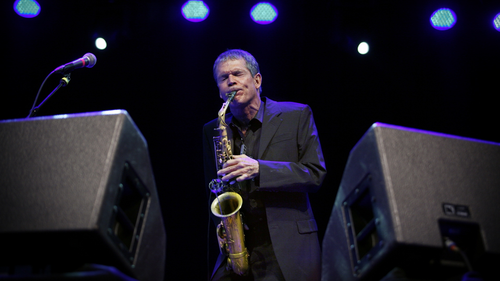

David Sanborn
One of the greatest saxophone influences in pop and jazz music

David Sanborn often performs behind two large monitor speakers aimed directly at him.
Here is a timeline of David Sanborn's life and notable achievements:
- 1945 - Born in Tampa, Florida.
- 1948 - Contracted polio and battled the disease for eight years. Sanborn began playing saxophone at the suggestion of a doctor as a way of strengthening his weakened chest muscles and improving his breathing.
- 1959 - Growing up in St. Louis, he performed with blues legends Albert King and Little Milton at the age of 14.
- Studied at Northwestern University and the University of Iowa
- 1967 - Joined the Paul Butterfield Blues Band. The 60s and 70s saw Sanborn's rise as a highly in-demand session musician and sideman
- 1969 - Performed at the seminal Woodstock music festival with the Paul Butterfield Blues Band
- 1975 - Recorded his first solo album, "Taking Off". Also performed the solo on David Bowie's iconic "Young Americans".
- 1981 - Wins first Grammy award for "All I Need Is You" from his album "Voyeur". Sanborn has won 6 Grammy awards so far and has been nominated 16 other times.
- 1987 - Performed on the soundtrack to the film "Lethal Weapon" with Eric Clapton. Sanborn would play on the scores to all future films in the series.
- 1988-89 - Hosted "Night Music", a TV music program where each episode featured musicians from eclectic and diverging genres and mashed them together in one-off performances.
David Sanborn continues to tour, record, and perform to this day.